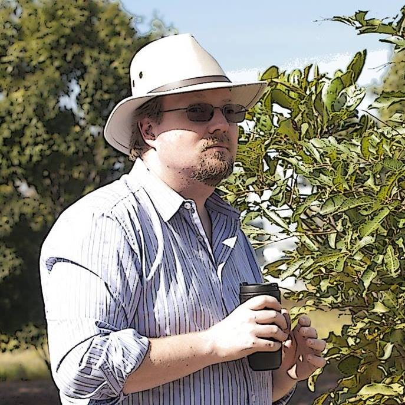

About Me

Welcome to my little corner of the web. I’m a passionate web developer and music maker based on the sunny Gold Coast in Queensland, Australia. My work blends creativity, precision, and a deep love for human connection — whether I’m writing clean code, composing melodic techno, or capturing a moment through the lens of my camera.
Before diving into the world of web and music full-time, I was a flying instructor — teaching aerobatics and flight fundamentals. That experience gave me a calm, focused approach I now bring into every project I take on. Today I craft accessible websites with a designer’s eye, drawing from natural colour palettes and bold accents to create something truly human. Whether you’re here for my music, my photography, or to geek out over HTML and CSS, I’m glad you stopped by.
My Experience
Web Developer: I create responsive, human-centered websites using HTML5, CSS3, Tailwind CSS, and Bootstrap. I love designing interfaces that feel intuitive and meaningful — using code as a canvas to shape emotional, accessible experiences.
Musician: I play guitar, saxophone, piano, and drums. I compose original tracks — often exploring melodic techno vibes. For me, music is both expression and meditation, and it deeply informs my rhythm, timing, and creative storytelling across mediums.
Former Flying Instructor: I once taught students how to master aerobatics and flight fundamentals. That chapter instilled in me patience, clarity, and an appreciation for calm focus — values I carry into everything I do today.
Skills
My Portfolio

Beachside Café Website
A responsive site for a beachfront café, built with Bootstrap 5. Features a mobile-first layout, menu sections, and soft tones to match the coastal vibe.
View Live
Florist Concept Site
A dark-themed concept website for a local florist using custom CSS variables. Features soft hero images, carousel, and accent greens for a lush aesthetic.
View Live
Interior Designer Profile
Built for a professional interior designer using Bootstrap. Includes hero banners, a photo grid, and an elegant timeline to showcase experience and style.
View Live